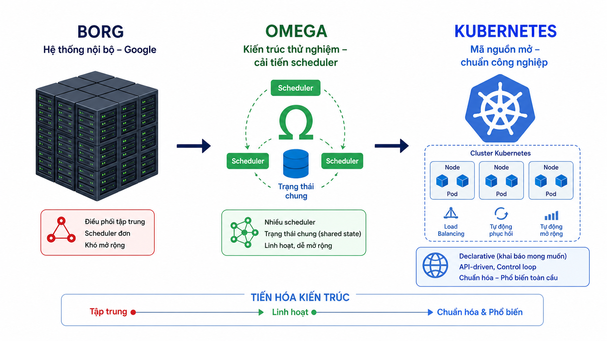
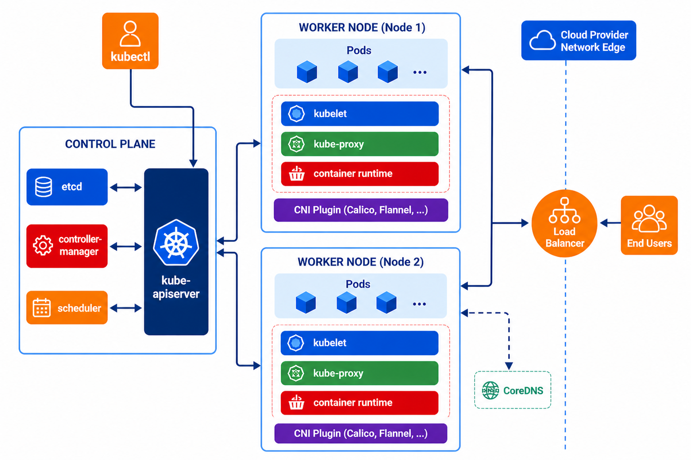

Trường ĐH Công nghệ – Đại học Quốc gia Hà Nội
Giảng viên: Trịnh Ngọc Huỳnh
Với tốc độ mở rộng hiện tại, hệ thống của chúng ta sẽ sụp đổ nghiêm trọng vào cuối năm 2004.

Là hệ thống điều phối container giúp tự động hóa việc triển khai, mở rộng và quản lý các ứng dụng container trên một cụm máy chủ.
Kubernetes giống như một hệ điều hành cho cụm máy chủ container
| Đặc điểm | Docker | Kubernetes |
|---|---|---|
| Mục tiêu | Chạy và đóng gói container | Điều phối và quản lý hệ container |
| Phạm vi | Tối ưu trên 1 máy chủ (1 Node) | Quản lý cụm máy chủ (Cluster - Nhiều Node) |
| Vận hành | Thủ công / Script đơn lẻ | Tự động hóa hoàn toàn |
| Phục hồi | Restart thủ công trên node | Tự phục hồi thông minh |
| Vai trò cốt lõi |
Công cụ tạo container (The Tool) |
Hệ điều hành quản lý (The Platform) |
Docker là công cụ chính để build và test container.
Kubernetes được dùng khi cần quản lý, mở rộng và vận hành hệ thống ở quy mô lớn hoặc môi trường production.
Chạy Pod
Gửi lệnh
Chạy container
1 máy
Control Plane + Worker
Single-node cluster
Nhiều máy
Phân tách Control Plane / Worker
Multi-node cluster
Sẵn sàng deploy ứng dụng 🚀
Control Plane
Worker Node

Sơ đồ kiến trúc chi tiết các thành phần Kubernetes
API Server đọc và ghi dữ liệu tại etcd
etcd luôn lưu trạng thái hiện tại của cluster
Quy trình xử lý:
iptables hoặc IPVS
để điều hướng dữ liệu ở tầng mạng.
kubectl ➔
API Server
Kubernetes hoạt động theo vòng lặp:
Pod là “đơn vị triển khai” của Kubernetes
Deployment = “cách Kubernetes chạy và quản lý ứng dụng”
Service = “cổng truy cập ổn định cho Pod”
Job = “làm xong rồi dừng”, khác với Deployment chạy liên tục
Deploy & Scale
kubectl create deployment web --image=nginx
kubectl scale deployment web --replicas=3
Expose (Service)
kubectl expose deployment web --type=NodePort --port=80
Quan sát hệ thống
kubectl get all
kubectl get pods -o wide
Debug
kubectl describe pod <pod>
kubectl logs <pod>
kubectl exec -it <pod> -- /bin/bash
Tạo Deployment:
kubectl create deployment web --image=nginxScale lên 3 bản sao:
kubectl scale deployment web --replicas=3Deployment đảm bảo số lượng Pod luôn đúng (self-healing + scaling)
Expose ra bên ngoài:
kubectl expose deployment web --type=NodePort --port=80Debug hệ thống:
kubectl get pods
kubectl logs <pod>
kubectl exec -it <pod> -- /bin/bash
Service cung cấp địa chỉ truy cập ổn định cho Pod
Pod chết → dữ liệu vẫn còn
Kubernetes = nền tảng chạy hệ thống AI end-to-end